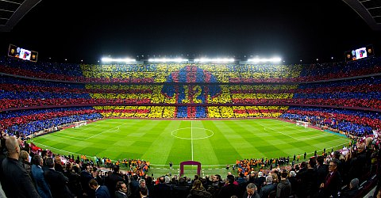

Fudbalski klub Barselona (kat. Futbol Club Barcelona), poznat i kao Barselona i kolokvijalno kao Barsa (kat. Barça), profesionalni je fudbalski klub iz Barselone u Kataloniji u Kraljevini Španiji.
Klub je 1899. godine osnovala grupa švajcarskih, engleskih i katalonskih fudbalera predvođenih Žoanom Gamperom, a postao je simbol katalonske kulture i katalonstva, iz čega je izveden moto „Više od kluba” (kat. Més que un club). Za razliku od mnogih drugih fudbalskih klubova, navijači posjeduju i upravljaju Barselonom. To je četvrti najvrijedniji sportski tim na svijetu, vrijedan 4,7 milijardi dolara,[1] i prema podatku iz 2021, najbogatiji fudbalski klub na svijetu po prihodima, sa godišnjim prometom od preko 715 miliona evra.[2] Zvanična himna Barselone je „Pjesma Barselone”, koju su napisali Žaume Pikas i Žuzeb Marija Espinas.[3]
FK Barselona svoje utakmice igra na stadionu Kamp nou koji ima 99.354 mjesta i građen je od 1954. do 1957. godine. Gradnja stadiona završena je 24. septembra 1957. godine. Klub se trenutno takmiči u La Ligi. Jedan je od samo tri kluba koji od osnivanja lige nikada nisu ispadali u niži rang. Rangiran je kao četvrti u listi FIFA najboljih klubova 20. vijeka.[4]
Barselona je u svojoj dosadašnjoj istoriji 26 puta bila prvak Španije, 31 put je osvojila španski kup kralja, 13 puta je bila pobjednik superkupa Španije (uz još 4 trofeja koje je osvajala u takmičenjima koja su prethodila nacionalnom superkupu), a 2 puta je bila pobjednik i ugašenog liga kupa Španije. Zahvaljujući velikim uspjesima u poslednjih dvadesetak godina Barselona je postala drugi najuspješniji tim na svijetu svih vremena po broju međunarodnih titula (20) odmah iza rekordera Real Madrida koji ima 26 međunarodnih trofeja. Od tih 20 do sada osvojenih internacionalnih trofeja Barselona je 5 puta osvajala Ligu šampiona, 4 puta Kup pobjednika kupova, 3 puta Kup sajamskih gradova, 5 puta Superkup Evrope i 3 puta Svjetsko klupsko prvenstvo. Uz to klub iz prestonice Katalonije 2 puta je osvojio i nekada veoma cijenjeno takmičenje Latinski kup.